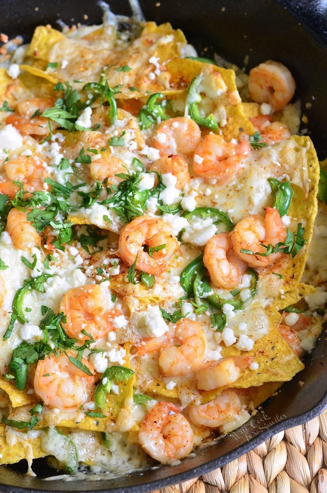
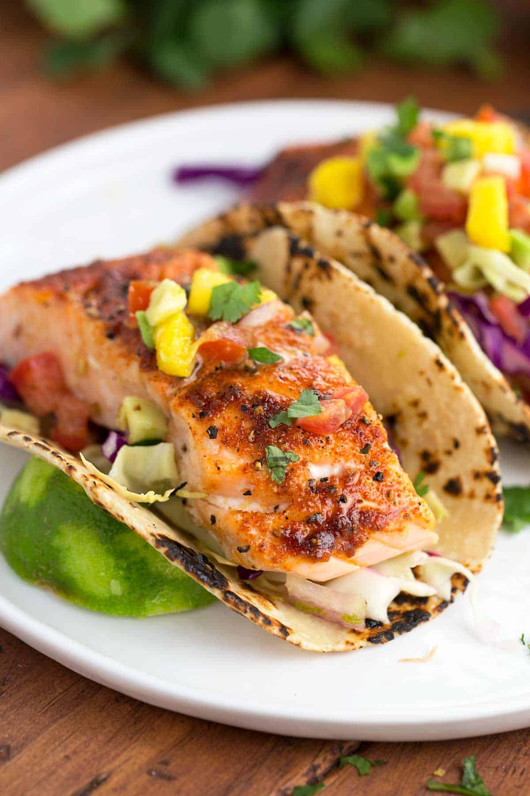

Coastal Crunch Nachos
Crispy tortilla chips topped with succulent shrimp, fresh jalapeños, melted cheese blend, pico de gallo, and a drizzle of our house-made cilantro lime crema. A coastal twist on a classic favorite.
Savor the breeze, savor the bite—ocean-inspired cuisine with a sunset view.
Start your voyage with coastal-inspired bites.

Crispy tortilla chips topped with succulent shrimp, fresh jalapeños, melted cheese blend, pico de gallo, and a drizzle of our house-made cilantro lime crema. A coastal twist on a classic favorite.

Traditional Hawaiian lomi lomi salmon prepared with fresh diced tomatoes, sweet Maui onions, scallions, and sea salt. Served chilled with crispy wonton chips for the perfect island-style appetizer.
Hearty mains inspired by shoreline comfort.
Grilled tilapia seasoned with Caribbean spices, nestled in warm corn tortillas with cabbage slaw, fresh mango salsa, and citrus aioli. Finished with a squeeze of lime for the perfect balance of tangy and sweet.
Three juicy beef patties on toasted brioche buns, topped with aged cheddar, caramelized pineapple, crispy bacon, and our signature tropical-infused sauce with hints of guava and habanero. Pure island indulgence.
Tender chicken marinated in honey-lime glaze, grilled to perfection and served in soft flour tortillas with pickled red onions, fresh cilantro, avocado crema, and a sprinkle of queso fresco. An island twist on traditional tacos.
Hawaiian-style chicken kebabs marinated in teriyaki ginger sauce, skewered with bell peppers, red onions, and pineapple chunks. Fire-grilled and served over coconut jasmine rice with a side of sweet chili dipping sauce.
A dish that embodies tropical luxury, smooth island flavors, and coastal charm—Coconut Cascade is an experience, not just a meal. This rich and velvety coconut lemongrass cream sauce is infused with fragrant herbs and zesty citrus, draping the dish like warm island waves. The aromatic depth balances sweet coconut, bright lemongrass, and a touch of spice, creating an unforgettable harmony of flavors that transport you straight to the Caribbean shores. Versatile and elegant, the Coconut Cascade is served atop your choice of fresh seafood, grilled chicken, or roasted vegetables, enhancing every bite with creamy tropical decadence. Each plate is garnished with toasted coconut flakes and fresh lime zest, evoking the look of gentle ocean foam meeting golden sand. A signature presentation that captures the essence of island paradise in every bite.
Sweet endings with a tropical twist.
A refreshing soda float featuring house-made mixed berry compote, vanilla bean ice cream, and sparkling citrus soda. Topped with fresh berries and a sprig of mint.
Strawberry cheesecake trifle layered with graham cracker crumbles, whipped cream cheese mousse, fresh strawberries, and white chocolate shavings. Stacked like golden sands meeting the sea.
Moist coconut cake soaked in dark Caribbean rum syrup, topped with caramelized pineapple and a dollop of rum-infused whipped cream. A warm island classic.
Layers of fresh mango puree, passion fruit curd, coconut cream, and crunchy macadamia nut brittle. A bright, tropical finish to any meal.
Classic key lime pie with a buttery graham cracker crust, tangy lime filling, and fluffy meringue toasted to perfection. Garnished with lime zest and edible flowers.
Creamy cheesecake swirled with guava paste on a coconut cookie crust. Finished with a guava glaze and toasted coconut flakes for the perfect Caribbean-inspired indulgence.
Driftwood Caribbean Currents brings the elegance of a luxury cruise ship to fine dining. With nautical details, oceanic blues, and tropical sophistication, every meal feels like a port stop in paradise. We bring Caribbean excellence to every plate, creating an unforgettable dining experience.